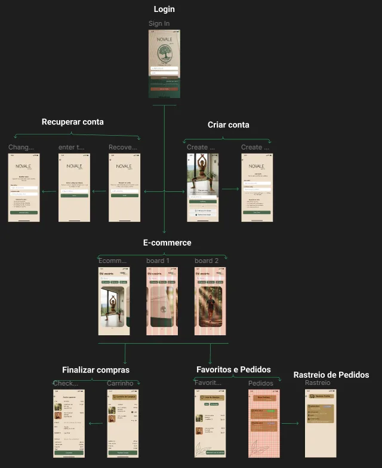

Estudo de caso • 2026
Protótipo de alta fidelidade de um e-commerce
Do levantamento de quem usa o sistema até o protótipo interativo no Figma.

O projeto
Fiz a prototipação de alta fidelidade de um sistema de e-commerce, da fase de descoberta até o protótipo interativo no Figma.
Comecei definindo os stakeholders e criando uma persona com mapa de empatia: o que o usuário pensa, sente, escuta, fala e faz, quais são suas dores e seus ganhos. Isso serviu de base para as decisões de design.
A partir dessa análise, levantei os requisitos:
- Funcionais: cadastro e autenticação com alteração de senha, catálogo de produtos com carrossel de imagens, carrinho com adição e remoção de itens e finalização de compra.
- Não funcionais: usabilidade, responsividade e consistência visual.
Com a especificação pronta, desenhei as telas principais e o fluxo de navegação entre elas, simulando o caminho completo do usuário, do cadastro até a conclusão do pedido.
O desafio
O principal desafio foi aprender o Figma como ferramenta de prototipação de software. Hoje uso esse conhecimento no trabalho, para validar telas de IHM (Interface Homem-Máquina) com clientes na automação industrial.
O projeto também me fez entender que o desenvolvimento de software começa por saber quem são os usuários do sistema, e só depois vêm os requisitos. Ficou clara a diferença entre requisitos funcionais, que descrevem o que o sistema faz do ponto de vista do usuário (como adicionar um item ao carrinho ou alterar a senha), e requisitos não funcionais, que definem atributos de qualidade como desempenho, usabilidade e segurança e orientam as decisões de arquitetura.